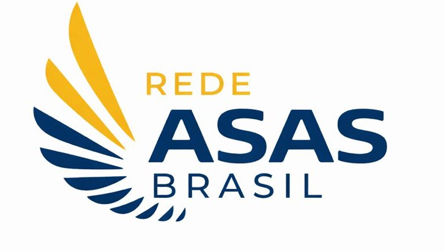

Doação institucional
Apoie a continuidade das atividades. Confirme com a equipe a identificação correta da finalidade antes do PIX.
Confirmar doação
Faça parte
Escolha como deseja apoiar e fale diretamente com nossa equipe.
Doação segura
Sua contribuição ajuda a manter alimentação, materiais, atividades, estrutura e profissionais que sustentam as atividades da instituição. Os dados de alcance estão em processo de atualização.
Confirme no aplicativo do seu banco que o beneficiário está relacionado à Associação Shekinah de Assistência Social — ASAS. Em caso de dúvida, confirme pelo WhatsApp oficial.
Chave PIX pelo CNPJ
Beneficiário: Associação Shekinah de Assistência Social — ASAS
Sua jornada de apoio
Apoie a continuidade das atividades. Confirme com a equipe a identificação correta da finalidade antes do PIX.
Confirmar doaçãoUse o PIX identificado ou a campanha externa, sempre conferindo o beneficiário e a finalidade.
Apoiar a construçãoA recorrência automática ainda não está disponível diretamente neste site. Não inserimos cartão ou dados bancários no navegador.
Consultar Benfeitoria ↗Para identificar sua contribuição, enviar comprovante ou solicitar recibo, utilize a central de atendimento. Não envie documentos financeiros por canais não confirmados.
Acessar “Já sou apoiador” →Outras formas de apoiar
Construa uma iniciativa de responsabilidade social com impacto local.
Conversar no WhatsApp → VoluntariadoCompartilhe experiência, presença e habilidades com a comunidade.
Quero participar → VisitaAgende uma conversa e visite a sede da Rede ASAS.
Agendar visita → MateriaisConsulte a equipe sobre necessidades atuais antes de enviar itens.
Conversar no WhatsApp →Ajude outras pessoas a conhecer a atuação da Rede ASAS e o projeto do novo prédio.
Fale com a Rede ASAS
Escolha uma opção para que a equipe identifique sua solicitação. Nenhum dado é enviado automaticamente a terceiros.